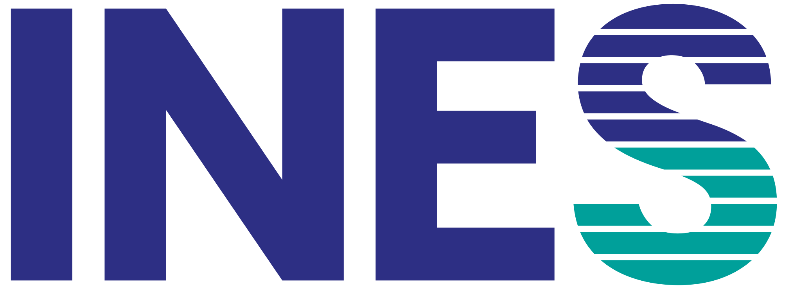

Rédaction des stations
Le rédacteur remplit la station dans INES : vignette, script du PS, grille à 1 point par item.
Rédacteurs et relecteurs

par OMAS EXTERNATQui fait quoi, et à quel moment, de la première station rédigée jusqu'aux résultats. Chaque étape s'ouvre pour montrer comment ça se passe dans INES.
Le gros du travail : à la fin, chaque station est validée, chaque place a un candidat, chaque salle son équipe et son matériel.
Le rédacteur remplit la station dans INES : vignette, script du PS, grille à 1 point par item.
Relecture par un pair, puis par un expert, validation par l'équipe. Un test par un externe si on le demande.
Import des billets HelloAsso, vœux de créneaux, puis attribution automatique.
Deux liens d'inscription, un code personnel pour chacun, puis le planning des salles.
Un clic envoie à chaque étudiant son heure, sa série et son QR code.
Ce qu'il faut imprimer, commander et installer, avec les quantités.
Tout est en place pour que le jour J, on n'ait plus qu'à accueillir. Rien à préparer pour les bénévoles.
À 17 h (18 h l'été), un rappel part seul à tous ceux qui viennent le lendemain.
Chaque salle montée comme le jour J, puis cochée « Salle prête » dans INES.
Étiquettes rangées par série, signalétique posée, planning affiché.
État du système au vert, codes de salle et sauvegarde prêts.
Une série : dix candidats, dix salles, 2 h 20. Chaque demi-journée en enchaîne plusieurs.
Il note sur son téléphone et ne voit qu'un numéro. INES vérifie que c'est le bon candidat.
Le même rôle pour chaque candidat ; une information seulement si on la demande.
L'onglet En direct montre les grilles en retard ou à vérifier.
Les résultats, les retours, et ce qu'on améliore pour la prochaine fois.
Notes et rang au fil des grilles ; le détail après la dernière série.
Une par station, 7 jours par défaut ; la note se recalcule.
Items ratés par tous, écarts entre évaluateurs, stations trop dures.
Les identités sont effacées ; les statistiques et la progression restent.
Mets les chiffres de ta session, les quantités suivent. Le matériel propre à chaque station est dans l'onglet Matériel d'INES.
Non. Tout est expliqué au briefing, une heure avant la première série : le déroulé, ta station, la grille. Viens simplement à l'heure indiquée dans ton e-mail de rappel.
Une heure avant la première convocation de ta demi-journée. L'heure exacte est dans ton espace INES et dans le rappel envoyé la veille à 17 h (18 h l'été).
2 h 20 : dix tours de 10 minutes avec une pause de 10 minutes au milieu, puis 30 minutes de débrief. Une demi-journée en enchaîne en général deux ou trois.
Dans ton espace INES, avec le code personnel reçu par e-mail. Tu y vois ta salle, tes horaires et, le jour J, un bouton qui ouvre directement ta salle.
Son numéro est sur l'étiquette collée sur sa blouse, avec un QR code. Ton écran affiche aussi le numéro attendu dans ta salle à ce moment-là. Si tu ouvres la grille d'un candidat qui n'est pas prévu, INES te demande de confirmer.
C'est voulu : les candidats sont anonymes pour les évaluateurs, pour que la note ne dépende que de ce qui se passe dans la salle. Tu n'as que leur numéro.
Observé, c'est 1 point. Pas observé, c'est 0. Il n'y a pas de demi-point : si tu hésites, demande-toi si le candidat l'a dit ou fait clairement. La communication se note à part, de 0 à 1 par quart de point (insuffisant, limite, satisfaisant, très satisfaisant, remarquable).
Chacun remplit sa propre grille sans se concerter pendant le passage. La note du candidat est la moyenne des deux grilles.
Sans réseau, la grille reste sur le téléphone (« En attente d'envoi ») et part dès que la connexion revient. Sans batterie, prends une grille papier de secours dans la salle, puis saisis-la dans INES ensuite. Des chargeurs sont à la table de l'équipe.
Préviens l'équipe : elle voit les grilles suspectes dans l'onglet En direct et peut supprimer une grille erronée. Tu ressaisis ensuite la bonne.
Coche « Absent » sur sa grille. Il n'aura pas de note pour ta station et ça ne compte pas contre toi.
Une ou deux phrases concrètes : ce qui était bien, ce qu'il faut travailler. C'est ce que le candidat relira le soir, avec la correction.
Non, on n'intervient pas pendant le passage. On note ce qu'on observe. Les explications viennent au débrief, juste après la série.
Non, pas mot à mot. Ta fiche décrit le personnage, ses symptômes et ce qu'il répond. Tu la reçois au briefing avec le temps de la lire, et tu peux poser tes questions à l'équipe.
Seulement ce que ta fiche indique comme spontané. Le reste, uniquement si le candidat le demande. L'important est de jouer pareil pour tous les candidats.
Non, c'est l'évaluateur qui remplit la grille. Toi, tu joues ton rôle du début à la fin du tour.
On émarge chaque candidat dans INES, en scannant son QR code ou depuis la liste de l'onglet Accueil. On lui donne son étiquette (numéro, prénom, circuit en couleur, QR code) et on l'oriente vers la salle d'attente. Les étiquettes sont rangées par série.
Ne le refuse pas toi-même : appelle l'équipe, qui vérifie dans INES (liste d'attente, changement de créneau, billet remboursé).
L'équipe. Une sonnerie commune marque chaque changement de salle, audible partout. Personne n'a à chronométrer dans sa salle.
La réserve est à la table de l'équipe : gants, grilles papier, stylos, solution hydroalcoolique. Au besoin, regarde la liste de la salle dans l'onglet Matériel.
La note par station arrive dans leur espace. Le détail des grilles et les commentaires ne s'affichent qu'après la dernière série de la session, pour que rien ne circule d'un jour à l'autre. Ensuite, ils ont quelques jours pour faire une réclamation.